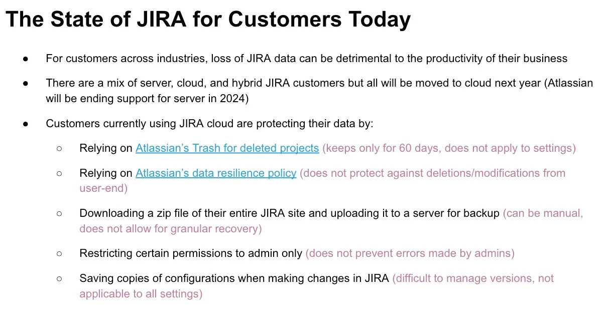
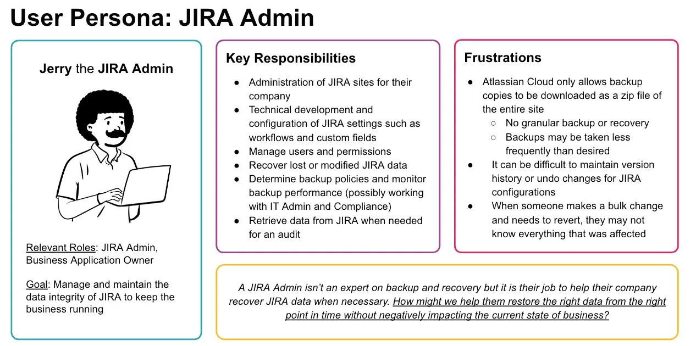
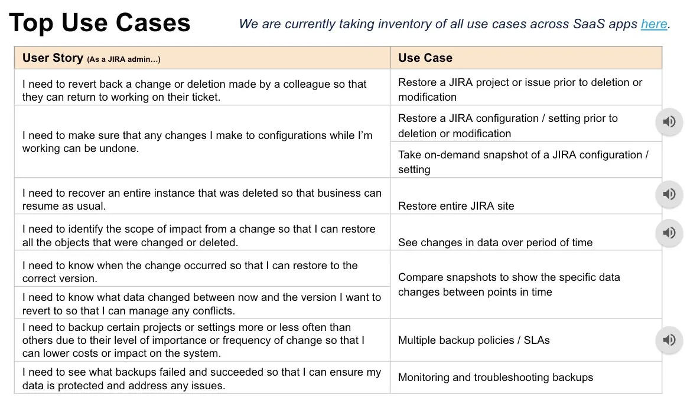
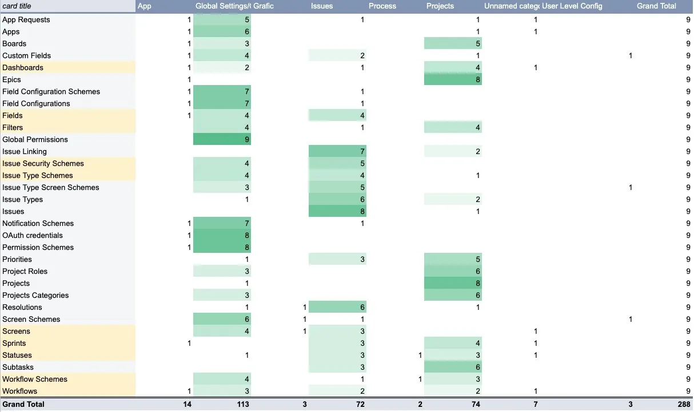
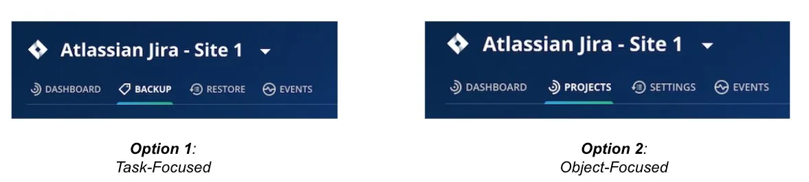
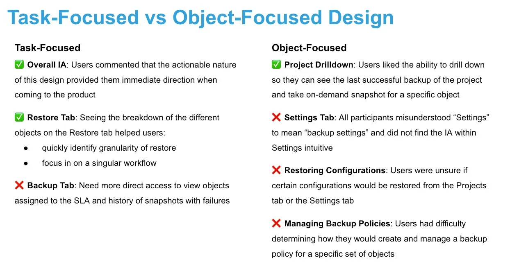
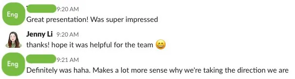
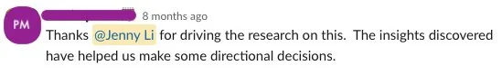
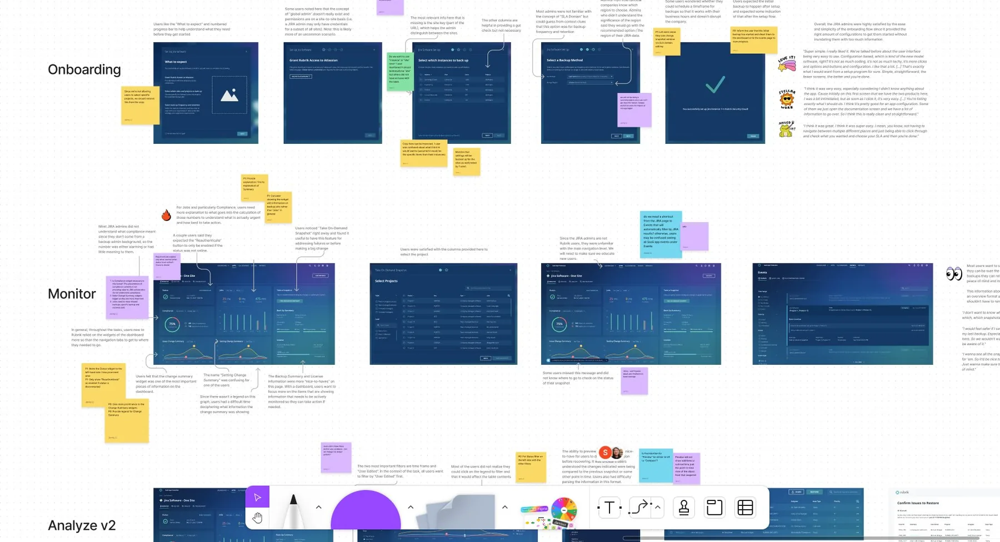

With the growth of cloud products in the IT world, Rubrik began expanding its services to include data protection for SaaS software, starting with Atlassian's JIRA. While Rubrik's user persona had traditionally been the backup admin, we hypothesized that specialized SaaS products would actually be owned by a different, dedicated role — and we'd need to understand that user's needs to build the right product. As the sole researcher, I planned a zero-to-one study spanning discovery interviews, concept testing, and usability testing, so the team could confidently define an MVP for this new offering.
Research Objectives
We needed to test our hypothesis about who actually owns JIRA workloads, and understand how — if at all — they were protecting that data today. Backup and recovery are the two core tasks of any data-protection product, so it was critical to pin down expectations for both.
- Identify and understand the persona(s) responsible for Atlassian workloads — who creates the backup policies? Who recovers JIRA data? How do they protect it today, and what's hard about that?
- Understand how users want to back up the different components in JIRA — what data types, at what granularity, at what frequency?
- Understand how users want to recover those components — how do they initiate recovery, what options do they need, at what granularity?
Phase 1 — Discovery Research
Kick-off & framing
Like all my research projects, this began with a kickoff alongside the PM and designer — drafting business goals, research goals, hypotheses, recruitment plans, and a timeline together over a video call. During that conversation I learned the team was considering a new information architecture, so I proposed a mixed-method approach: card sorting to understand users' mental model of JIRA's components, plus a round of concept testing to weigh the existing IA against the proposed one.
Internal expert interview & recruitment
I started by interviewing our own internal JIRA admin, with the PM and designer on the call, to build an initial picture of the space. Recruiting external participants was harder — this was a persona we'd never directly engaged before. I drew from our existing research panel and posted a callout on the Atlassian developer forums. Participants mostly came from technology and IT — companies where JIRA downtime has real business consequences — ranging from mid-size to large enterprises.
Unmoderated card sorting
- Conducted via UXTweak, in a hybrid format (predefined categories, plus room for participants to add their own)
- 12 participants
- Data collected from UXTweak and analyzed in Google Sheets via heat-mapping
Customer interviews & concept testing
This phase made up the bulk of the study:
- 1-hour Zoom sessions — 30–40 minutes semi-structured interview, 20–30 minutes concept testing
- Within-subject testing across two designs (new IA vs. old IA), counterbalanced
- 5 current Rubrik customers, 4 non-Rubrik customers
- Recordings tagged and analyzed in Dovetail
Research Insights
Findings and recommendations went out via a slide deck — first to product and design stakeholders, then an abbreviated version to engineering, to help that team understand the "why" behind what we were building.
High-level findings
Because this study ventured into territory the company knew little about, it mattered just as much to paint the bigger picture — the persona, the landscape — as it did to land specific recommendations.



Card-sorting findings
A pivot-table heat map in Google Sheets showed where users agreed — and disagreed — on how to categorize each JIRA component. The cards with the most disagreement (highlighted) were mostly components tied to both settings and projects, so they naturally spanned both categories.

Concept testing findings
The biggest change on the table was a shift from an object-focused information architecture to a task-focused one. The card sort had already hinted that some components lacked a clear category — suggesting users might struggle to locate them in an object-focused experience. I wanted to test the viability of a task-focused alternative, letting JIRA admins jump straight into a workflow based on what they're trying to accomplish, rather than hunting for the object first.

I kept the concept tests focused on high-level IA and navigation rather than specific workflows — asking where users expected to recover different components (Projects, Issues, Workflows) and where to create backup policies. Each session ended by asking users which design they preferred, not just to tally votes, but to understand what worked — and didn't — about each.
Key findings

Summary
JIRA's ecosystem is heavily relational — a change to one object can ripple into many others. As a result:
- Users' mental categorization of data types isn't well defined
- Admins may not know the full scope of impact when a change or deletion occurs
- Recovery is often a complex process involving more than one data type
- Admins are wary of conflicts arising from a restore, and want assurance of exactly what will change
Recommendations
- Take a task-focused approach to the SaaS admin information architecture
- Let admins view backup successes and failures at a glance, and view the SLA assigned to any given project
- Help admins determine what to recover via object-attribute search and point-in-time snapshot comparison
- Allow flexibility to customize additional policies on top of an overall site policy


Phase 2 — Evaluative Research
With the design taking shape, I planned a second phase: usability testing across the main flows — Recovery, Analysis, and Backup. Each needed more than a typical one-hour session, so I ran two 1-hour sessions per participant. To recruit, I created a "JIRA Specialist Cohort" — a mix of returning and new participants invited into a more selective, multi-session group, each session closing with a System Usability Scale (SUS) survey.
Session 1 — Recovery & Analysis
Objectives: recovering multiple issues, recovering a setting, and using Analyze to investigate a point-in-time problem.
"Imagine a colleague hands you a list of 5 JIRA tickets that need to be restored to a previous state. How would you do this in Rubrik?"
"It's the end of January. A colleague accidentally made a bulk change and is now missing almost a dozen issues from the current sprint — he knows it happened in the last couple of days, but not which issues were affected. How would you help him identify and restore them?"
"You experimented with changes to several JIRA workflows recently, but need to revert — and never saved a copy in JIRA itself. What would you do?"
Session 2 — Onboarding & Backup
Objectives: first-time setup, monitoring the dashboard, and troubleshooting backup errors.
"You're Jerry the JIRA admin, setting up JIRA data protection in Rubrik for the first time. After talking with your team, you decide to back up two JIRA sites every 12 hours."
"A few days later, you return to confirm your backups succeeded. What do you see, and what would you do next? Now take an on-demand backup to cover one that failed."
"Some backups are failing and you need to find out why. Where do you go?"
Research insights
Since I'd worked closely with the PM and designer throughout, I ran the share-out as an interactive FigJam session rather than a static deck — screenshotting each step of the flow and annotating it with friction points and user quotes, color-coded by type (question, recommendation, discussion point, resolution). I walked through each flow live, facilitating discussion and capturing notes in real time. As with Phase 1, I followed with a shorter, more technical share-out for engineering.
